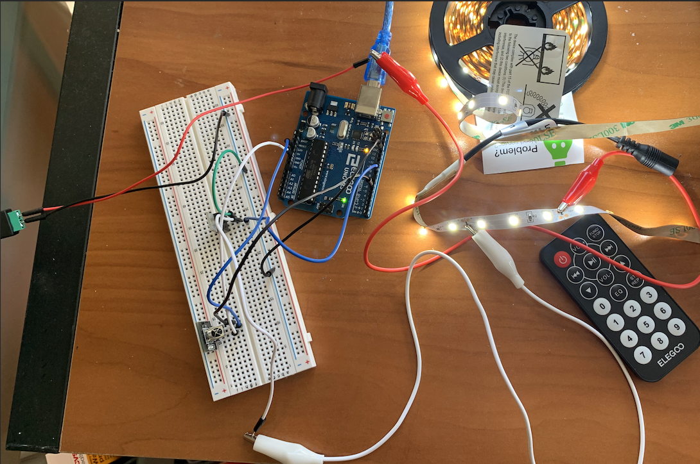

My Assignment 5!

Here is all the documentation for assignment 5. For this assignment I used an IR receiver, remote, and LED strips to control the LED strip via the remote. I took the remote input, checked if the IR code was for the up/ down buttons, then adjusted the LED strip brighntess accordingly.
Schematic
These are the schematics for my IR receiver and the N-MOSFET transistor with my LED strip.
`
Circuit
Here is my breadboard and arduino connected to my IR receiver and LED strip. Note that I connected my IR receiver to 3.3V, as I found it was more responsive and still had sufficient power.

Firmware
This is my code that tracks the input of the remote and changes the brightness of the LED strip.
#include <IRremote.h>
int leds = 9; //leds connected to pin 9
int recPin = 6; //receiver connected to pin 6
IRrecv irrecv(recPin); // creates receiver object
decode_results results; //initializes receiving IR code
int brightness = 150; //sets default brightness
void setup() {
pinMode(leds, OUTPUT); // output to leds initialized
Serial.begin(9600); //begins reading serial monitor
irrecv.enableIRIn(); //starts the receiver
}
void loop() {
if (irrecv.decode(&results)){ //if IR code is received
Serial.println(results.value);
if(results.value == 16748655 && brightness < 255){ //if up button is pressed
brightness = brightness + 30; //brightness is increased
}
if(results.value == 16769055 && brightness > 0){ //if down button is pressed
brightness = brightness - 30; //brightness is increased
}
analogWrite(leds, brightness); // sets new led brightness
irrecv.resume(); //resets receiver
}
}